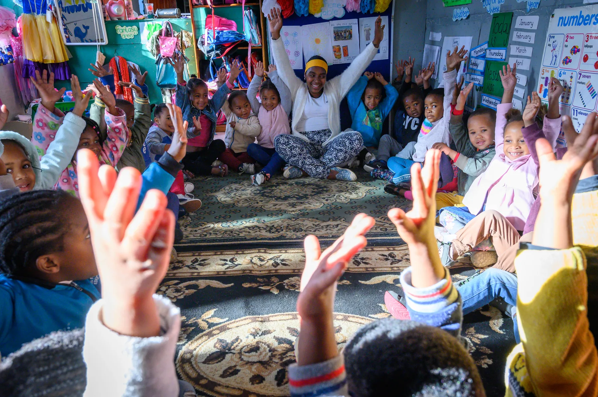
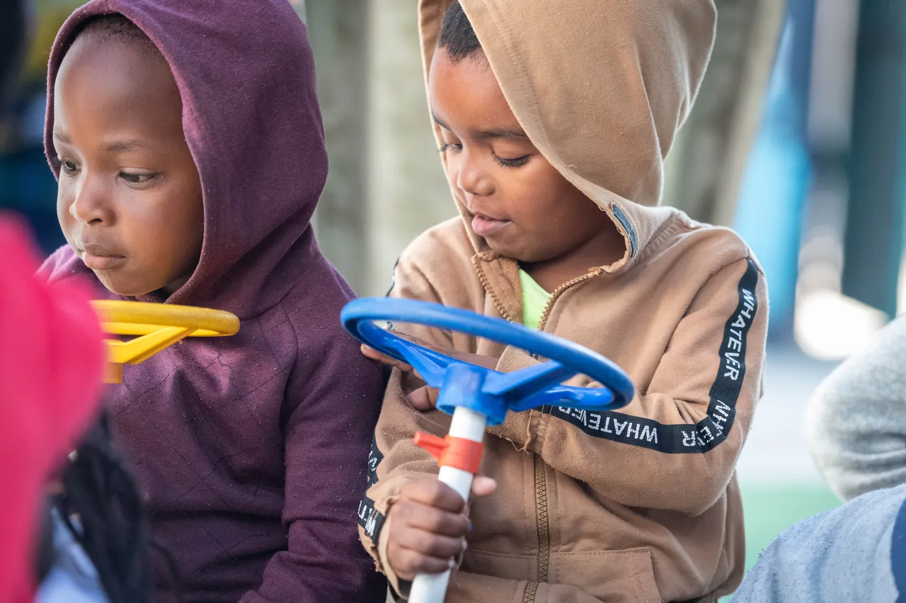
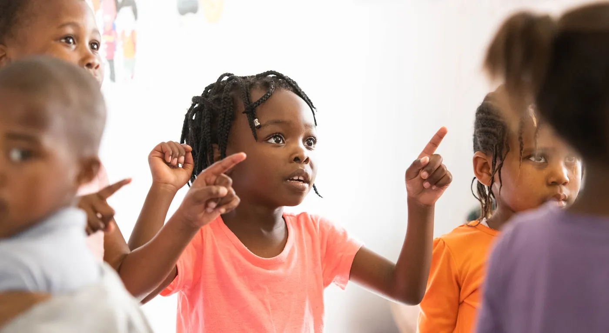
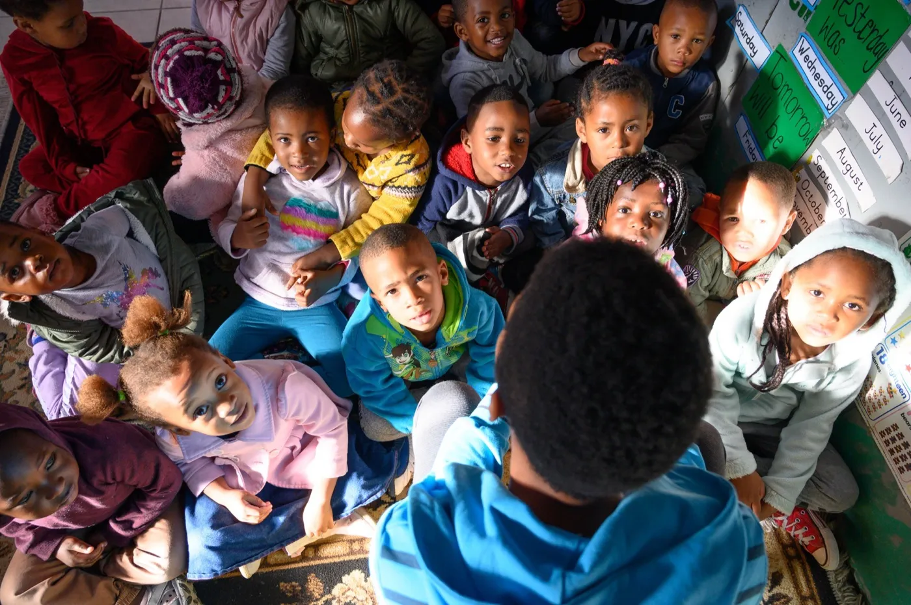
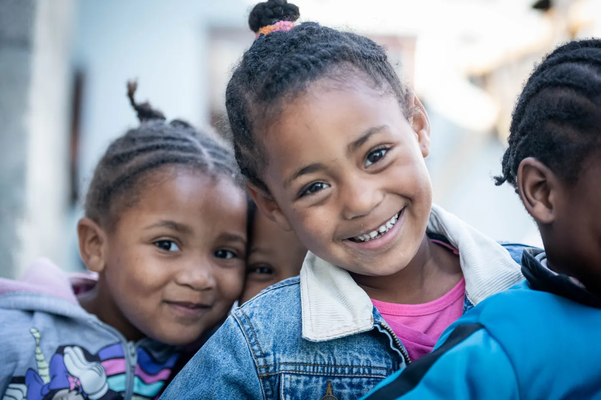
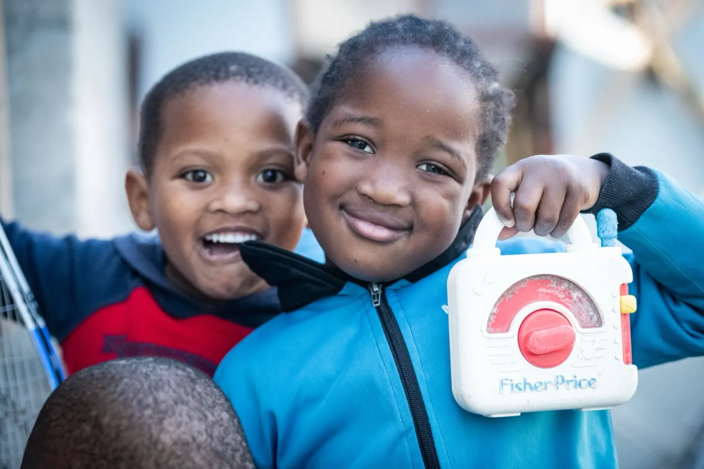
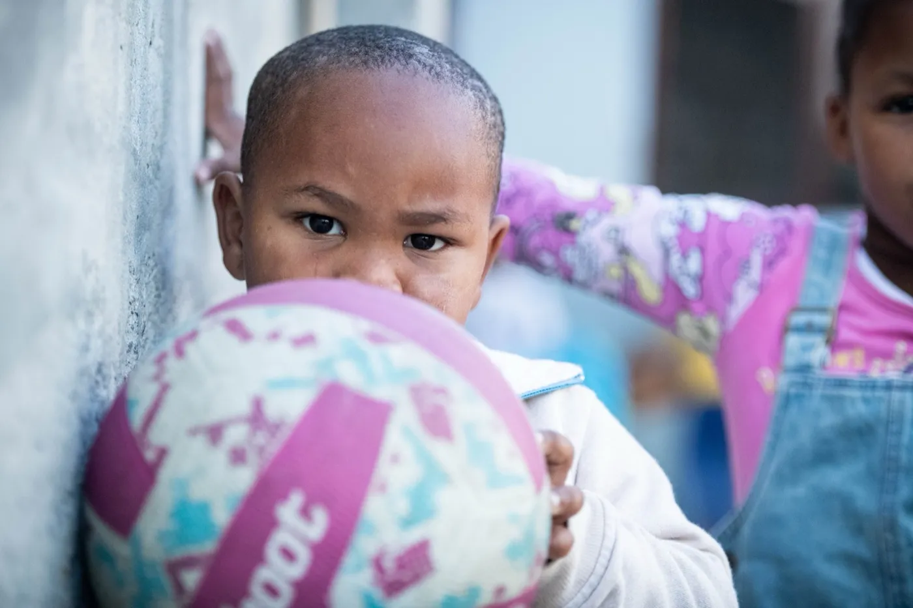
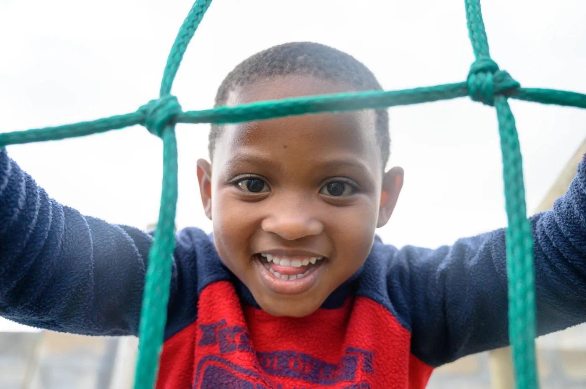
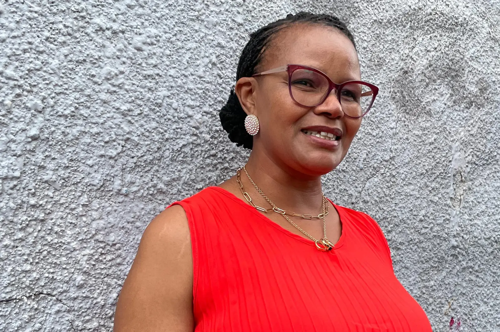

01
We coordinate principal training across 7 focus areas: Active Learning; Health & safety; Parent Engagement; Community Engagement; building & environment; Business administration; Personal Growth & Leadership.

To see established places of light, safety, nurture, and learning for children aged 0-5.
1,783
Children nurtured, fed and educated at 30 ECD centres in 2025
144
ECD staff employed at the 30 ECD centres in 2025
20 years
Serving the community 2007-2026
68%
of ECD centres are fully resourced in 2025
About this partner
Supporting community-run preschools in Vrygrond - Western Cape and coordinating a network of partners so that every child has access to opportunities to learn, grow and thrive in a safe, nurturing environment.
True North has worked in the Vrygrond and Overcome Heights community for twenty years. What began as support to a small cluster of community-run preschools grew into something broader: a coordinating body that brings ECD centres, partner organisations and specialist service providers together under one shared framework. We designed the Rainbow Development Framework — a holistic quality roadmap that helps centres improve across six areas: legal compliance, leadership, quality learning, financial viability, resourcing and community impact.
Today we support 30 ECD centres whose 144 staff serve 1,783 children and their families. We train, support, equip and connect ECD centres so that they can move through their development journey to become a legal, safe and financial viable centre which provides a quality learning program with qualified staff with a holistically development leader who gives back to others. We are also actively transitioning with handing over our initiative to the local community structure while sharing our Rainbow Development Framework with other community-based organisations across South Africa.








01
We coordinate principal training across 7 focus areas: Active Learning; Health & safety; Parent Engagement; Community Engagement; building & environment; Business administration; Personal Growth & Leadership.
02
Teachers attend regular training so that they can develop children as they learn through play.
03
Centres are equipped with educational resources, renovations and playground improvements so that children learn in safe, warm and beautiful environments. Two nutritious meals a day are provided.
04
We coordinate all ECD activities — bringing principals together, aligning partner services and managing shared data in order to prevent duplication and ensure resources and services reach where they are needed most.
EvenGround supports us to reach our 2027 goal - 75% of ECD centres are established and sustainable. They are one of many funding partners who contributes to all our activities so that together we achieve this goal. Ultimately ensuring that children are ready for lifelong learning.
A story from True North

In Vrygrond, Nontutuzelo began her journey by opening her Little Lambs ECD center in her home so local children would have a safe place to learn and grow. Through her partnership with True North, she gained leadership training, curriculum support, and the tools to strengthen the quality of her center. Her dedication eventually led her to head the Vrygrond ECD Forum, representing more than 30 centers across the community.
Support Even Ground
Donations are made to Even Ground and help fund community-led programs like True North's across South Africa. Even Ground is a US 501(c)(3); contributions are tax-deductible.